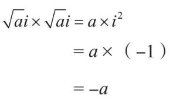
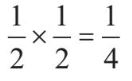
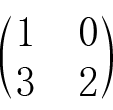
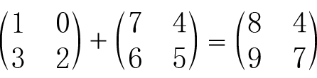
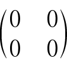
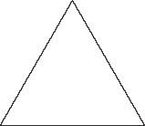

佳发蛋糕佳发蛋糕
佳发蛋糕佳发蛋糕配料
扁圆形的原味小蛋糕
橘子酱
融化的巧克力
方法
1. 在每个小蛋糕上放上一小团橘子酱。
2. 用小勺薄涂一层巧克力在橘子酱和蛋糕上。
3. 放进冰箱。
人们可能会认为这个食谱实在没什么用——我要去哪里找“扁圆形的原味小蛋糕”？如果我想从零开始做佳发蛋糕呢？那样的话，你需要准备的配料就应该是：鸡蛋、白砂糖、面粉、黄油（这些材料用于做蛋糕），橘子和糖（这些材料用于做橘子酱），可可酱、可可粉和糖（这些材料用于做巧克力）——或许，巧克力也可以直接算作一种基础配料？
什么算是基础配料，而什么又必须由其他更基础的配料组合而成，这是一个比较微妙的问题。分类的标准取决于你想达成的目的。也许对你来说，佳发蛋糕本身就是一种基础配料，你会直接从超市买一包回来。而对我来说，自己做东西会让我很有满足感，我喜欢从零开始，用鸡蛋、白砂糖、面粉、黄油、橘子和巧克力做佳发蛋糕。
数学研究的目的之一就是“从零开始”。重复问“为什么？为什么？为什么？”的一个结果就是你会得到越来越基础的概念。你总会面临什么算是基础配料，而什么需要进一步分解这个问题。我在前面曾经提到，数学的基础配料叫作公理，而将某个概念不断分解为基础配料的过程叫作公理化。
归根结底，数学就是关于真实事物的科学。我们一直在问它们为什么是真的，然后通过把复杂的事实分解为更简单的事实来回答这个问题。所以本质上，公理就是我们在某种特定情境下所认可的基本事实。这种界定并不意味着它们是绝对真理或者永远都是真的，或者不能再被分解了。它仅仅意味着，在我们目前探讨的数学情境下，它们就是基础配料，而我们想看看用它们究竟能做出什么东西来。
你的厨房里有现成的配料吗？
通常，当我想尝试新食谱的时候，我就不得不出门买一些我不会长期储备的食材。渐渐地，这越来越不成问题，因为我的厨房里囤积了越来越多的东西，尤其是烘焙材料。我第一次用到黑砂糖是在我准备做姜汁蛋糕的时候，我不得不特意出门购买这种糖，因为我的厨房里没有。当然，做姜汁蛋糕并不会用掉一整包黑砂糖，因此对于剩下的那些，我就需要找到各种其他的方式把它用掉。不同的人会在厨房常备不同的基础配料，对我而言，黑砂糖现在就像巧克力、黄油和大约8种面粉一样，成了我厨房里的常备配料之一。我只有在尝试特定的食谱时才会去买牛奶和鸡蛋，但我会常备杏仁粉；你可能会把牛奶和鸡蛋作为你的厨房常备配料，而从未遇到要用杏仁粉的时候。
就像我在之前关于内在动机和外在动机的讨论时提到的，也许你会为某一个特定食谱而专门购买配料，也许你会直接用厨房里的现成配料发挥，看看自己能做出些什么（近来，人们将后者称作“烘焙实验”）。可能是我的思维方式太过数学了，但不管怎样，有些时候我真的希望食谱书可以以“如果你买了这些配料，你能用它们做些什么”为线索给书中的章节分类。或者也可以说得不那么直接，比如，使用这些配料和你刚学会的新的烹饪方法，你还可以做出什么菜？
之前我们已经介绍了一种“新的配料”，也就是虚数i的概念。我们宣称它是一个全新的数字，并且它是-1的平方根。所以我们知道的关于这个数字的全部信息就是：
i2=-1.
你的第一反应也许是反对：但是并没有这样的数字存在！
但更接近事实的说法是，原来并没有这样的数字，不过现在我们发明了一个。就像此前我们只有有理数的时候，2的平方根还不存在，于是我们就发明了无理数一样。
现在，如果我们假设这个奇怪的新数字在其他所有方面都和我们已知的数字类似会怎样呢？这有点儿像涉及时光穿越的书或电影中的情节，故事里的人、事、物一如往常，只有主角们可以在过去与未来之间随意穿梭。
我们可以用i做乘法运算：
2i×2i=4i2
=4×（-1）
=-4
于是现在-4也有平方根了。实际上，每一个负数现在都有平方根了，因为如果正数a有一个平方根√a，那么-a就有一个平方根√ai。因为

为了理解数字i带来的其他影响，我们需要非常确定我们希望它遵循哪些其他的规则，也就是我们将要应用到虚数上的公理。
用同样的积木来造不同的东西
当你坐在一堆乐高积木面前时，你实际就拥有了两样东西：
• 一堆积木。
• 某些把积木组合起来的方式。
乐高的高明之处（或者说高明之处之一）就在于它的要素十分简单，而与此同时又拥有太多要素相互组合的可能性。更进一步地分析这种巧妙的设计，我认为很重要的一点是，乐高积木的组合方式是清晰且有限的。
数学在某种意义上和乐高一样。你会从一些基本的积木和组合方式入手，然后看看你能制造出什么东西。你有两种操作方法：
• 你可以先从积木着手，看看你能用它们拼装出什么东西。
• 你也可以先从你想拼装的东西着手，看看你需要什么积木来拼装它。
比如，如果你想用乐高积木拼一辆车，那么你可能需要一些轮子。除非你想做的是一辆非常大的车，那样的话你就得用最基本的积木来拼装车轮了。
这与内在动机和外在动机有关。在某种程度上，公理化就是由外在动机驱动的、处理整个数学体系乃至数学世界的一套方法。它是一种逻辑性的方式，用于梳理你希望创建的数学体系的基本结构。
我们先用数字来尝试一下。要找出所有的自然数，即1、2、3、4、5，等等，你只要将1作为一块砖，并将“加法”作为把所有的砖组合起来的方式即可。也许你需要很长时间才能数到100万，但在数学里，我们首先考虑的是总体上你能否做某事，而它需要多长时间来完成则是另外一个问题了。而且，就算是在现实生活中，也总有一些商业巨头的营业利润是通过售卖一个个小的商品累积而来的。我觉得这就是为什么学步期幼儿通常会因为学会爬楼梯而激动不已，因为他们意识到只需要重复向上爬一步这个步骤，他就可以越爬越高，甚至爬到天上去（除非一些煞风景的大人把他们从楼梯上抱下来）。
先执行操作方法1，再执行操作方法2是一个不错的尝试。也就是说，你首先决定要拼装一辆车，然后你找出所有你需要的基础构件——轮子、门等。之后你可以看看用这些基础构件还能拼装出什么东西，或许是一辆皮卡车，又或许是一艘火箭飞船。
也许你还可以想想组合这些积木的另类方法。当小孩子们刚开始玩乐高的时候，你会看到他们只会简单地把乐高积木一个接一个堆叠成一座塔，而再过一些时候，他们可能就会想到把这些塔并排拼在一起可以组成一堵墙。再之后他们可能会想到，也许还可以搭建有拐角的墙，然后把它们组合成一座房子。对数字的探索也一样，当你厌倦了只是做加法的时候，你就会转而尝试做减法、乘法、除法，然后你就会像真正的数学家那样“发明”出分数。
数学中的公理就像乐高积木的基础构件和你设定的组合方式。数学家让他们所建构的数学世界严格按照逻辑运行的方式之一就是“公理化”。也就是说，他们会决定可以用哪些积木，以及可以使用哪些组合方式。这并不意味着你就永远不能用其他的积木和其他的组合方式了，而只是说，就现在而言，你只被允许使用这些基本素材，请在此前提下探索你能用它们搭建出什么来。
重点在于，这些积木被视为基本要素。当你拿到了一盒这样的积木时，你不会尝试拆分它们，虽然肯定有小孩子看到乐高的第一反应是想把它们敲碎。
以下是一些关于整数的公理：
• 任意两个整数都可以相加，得到另外一个整数。
• 如果a、b和c为任意整数，那么（a+b）+c=a+（b+c）。
• 如果a为任意整数，那么0+a=0。
• 对于每一个整数a, 都有另一个整数b存在，使得a+b=0。
最后一条公理说明我们知道我们讨论的是整数，而不是自然数，因为这条公理涉及负数。但我们讨论的也可能是“一圈只有3个小时的钟”。你也许觉得这个例子不涉及负数，因为钟面上只有1、2、3这三个数字。但每个数字仍然都有一个对应的数字，满足二者相加的结果等于0，因为在这个例子里0就等于3：
1+2=3
2+1=3
3+3=3
因此，这些公理实际上是关于数学中“群”这个概念的公理。我们会看到还有很多关于群的例子，并且其中很多都和数字并没有什么关系。
设定严谨的规则以确保无漏洞可钻
一个当医生的朋友有一次告诉我，他在剑桥的阿登布鲁克医院参加过一次面向医生、护士群体组织的足球赛。显然，球队队员有男有女，按照规定，有女队员的球队在开场时会多加分，有几个女队员就多加几分。结果有一支球队意识到他们的女队员人数比所有其他球队都多，于是在整场比赛中，他们只需要让全部队员都守在球门口就能赢了。
你是否认为，一个有操守的人应该遵循比赛规则的内涵，而非仅遵循规则的字面意思？还是你认为，规则就应该设定得足够滴水不漏，让人没办法钻空子？
在数学里，我们的研究对象只遵从逻辑规则。所以我们不可能要求它们理解规则的内涵，而不要只看规则的字面意思。数学规则的“字面”意思就是你严格遵循逻辑操作所得到的结果，所以这也是我们的数学对象唯一会“做”的事。因此，当我们建立这些规则的时候，我们必须仔细确保没有漏洞存在。
这里有一个关于引发众人困惑的数学漏洞的例子。你应该还记得，质数就是“只能被1和它本身整除”的自然数。然而，我们必须在此基础之上增加一条警告，宣称数字1不是质数，这简直就像马后炮一样。
有时候人们会这样解释这个额外的限定条件：“质数是有且仅有两个因数的自然数，而1只有一个因数。”这个说法是对的，但它并没有解释为什么我们要这样规定。关键在于理解质数为什么存在——它们是我们运用乘法而非加法构造新的数字时所使用的基本构件。如果我们只使用加法运算构造新的数字的话，我们只需要数字1，然后不断地加、不断地加，就可以得到其他所有的数字。而如果我们要使用乘法运算构造新的数字的话，那么数字1就没有用了，因为任何数字乘以1还是它本身。也就是说，1在这里并不是一个很好的基本构件。
更严格地说，我们希望每一个整数都是用质数以独一无二的方式组合得到的。比如，用质数组合得到数字6的唯一方法是2×3（顺序不重要，所以3×2算是同一种方法）。然而，如果我们说1也算质数的话，那么得到6的方法就还有1×2×3和1×1×2×3，等等。1的存在会破坏一切，对我们完全没有帮助。所以我们必须弥补这个规则中的漏洞。
严谨的规则可能导致奇怪的结果
世界上不存在公平的投票制度。
基于你自己参加投票的经历，你也许凭直觉认同这个判断，或者你也可能对此深信不疑。但无论如何，这仍然与数学定理有关。
重点是，要明白这个陈述背后的逻辑，我们首先需要精确地定义什么是公平。也就是说，我们需要精确地设定我们的公理。这个关于公平的命题也被称为阿罗悖论。它不只涉及政治选举，也与由一组评委决定选手排名这类事物有关。
在这种情境下，有关公平选举的公理如下所述：
1. 非独裁：最终结果是由多于一个人决定的。
2. 一致同意：如果每个人都投票认为x比Y更好，那么在最终结果中，x的排名会比Y更高。
3. 与无关选择的独立性：对x和Y的排名不应受到投票者对Z的看法变化的影响。
阿罗悖论接着说，如果有多于两个候选人（或备选项），那么公平的投票体系就是不存在的。
现代民主选举制度最经常破坏的是第三条公理，这也就是为什么策略性投票成为可能。
你也许曾和他人有过关于数学类型的争论，而最终的论点往往会被归结为定义之争。比如，你可能希望和他人讨论人是否有灵魂，而问题的结论完全取决于你对“灵魂”的定义。
数学研究的主要目的之一就是用逻辑研究所有的事物，而数学家不愿意让他们关于数学类型的争论最终归结于定义之争，因此，他们会在争论的最开始就对他们所使用的定义进行严谨的描述，就像设定基本原则一样。当有人因起跑犯规而被取消资格时，作为观众的你可能会为他们打抱不平，但那正说明了比赛规则的精确性。你也许不同意这些规则，但你并不能（在理性上）拒斥规则被实施这个事实。
这就是数学这门科学以精准著称的原因之一，也是很多人在学数学时总会产生挫败感的原因之一。数学的原则是不可变通的。你可以认为某些原则很愚蠢，但你并不能对此做什么。就像我总是觉得壁球球拍的拍面太小，让我很难打到球，但这就是壁球这个项目的一部分，是公理的一部分。你也许认为-1的平方根只能是一个虚数这件事很愚蠢，但你认为它很愚蠢并不能影响什么。我们现在要玩一个游戏，这个游戏的主要内容就是把虚数当成积木来搭建东西，你是否相信它的存在并不重要——它就是游戏规则的一部分。
用严谨的规则来去除人为偏见
跳高运动是一个很容易让我产生满足感的体育项目——前提是不需要我本人参加（我曾在关于抽象的那一章提到过关于参加跳高测试的惨痛经历），而是观看跳高比赛。因为跳高的规则和目标都非常清晰。你必须越过一根横杆，基本就是这样。我知道我漏掉了一些技巧方面的细节问题，但从观众的角度来看，运动员“越过一根横杆”就是比赛的全部内容了。跳高不像一些其他的运动项目，比如花样游泳或摔跤，在那些项目中，不管裁判多么努力地做到客观评判，最后的判定总是人为的。
数学关乎剔除事物中主观人为的部分，让事情只遵循逻辑运行。这既能让人感到满意，因为每件事都因此变得非常清晰、毫不含糊，也能让人丧失成就感，因为本质上我们是把自己从我们研究的事物中剔除了。不过，我们的目的并不是把所有的人类活动都变成纯逻辑的过程，就像我们并非试图宣称跳高就是人生的全部（虽然正在参加跳高比赛的选手可能真的会这么想）。我们的目的是清晰、准确地认识事物的某些方面。跳高的目的是看看人类在助跑的帮助下能跳过多高的横杆。这是一种非常有观赏性的体育赛事（背越式跳高的动作是如此优雅，和它平庸的名字完全不符），它吸引我的另一个原因是它突出了人类的某个十分纯粹的特征。百米短跑吸引我的原因也是如此，而不是尤塞恩·博尔特比我们其他人更容易赶上公交车。
你几乎可以想象得出在最开始的时候，跳高的规则是如何被“公理化”的，换句话说，这些规则是如何制定出来的。让我们再次尝试回溯历史。也许一些人曾互相比赛谁能跳过更高的篱笆，而其中一些人意识到了，如果他们可以在跳高之前先跑一段路，他们就可以跳得更高。之后，大家也许会开始讨论究竟可以允许选手在跳高之前跑多远，再之后，大家可能会开始讨论是否可以在篱笆的另一边放一个垫子作为着地缓冲，等等。
数学的一部分公理化也是以类似的方式实现的。
有理数是将整数写成a/b的形式得到的，其中a和b都是整数（正整数或负整数）。而很快你就会意识到，对于这个定义，你必须增加一个限定条件，即b不可以为0，因为那样的话a/b就没有意义了。
然后你又会意识到，还要再加上一个规则，说明1/2其实和2/4、3/6都是一样的。有两种方法可以用于对这一规则进行说明，第一种是宣布所有的分数都必须写为最简分数，即分子和分母没有公约数。但这种说法多少有些言不由衷，因为2/4也完全符合分数的定义。
在数学上，另一种更成熟的做法是，接受所有以a/b形式出现的分数，但增加一条公理用以管理本质上相等的分数，也就是：
只要a×d=c×b，那么 a/b=c/d。
这条公理看起来有些隐晦，它实质上说的就是：“如果我们把这样的两个分数约分为最简分数，那么它们就会相等。”上面这个表达式只是一种更有效的描述方式。
贯彻严谨的原则来避免含糊不清
如果你有弟弟或者妹妹，我相信你小的时候肯定遇到过这个问题：怎样才能把最后一块蛋糕平均地分给你们两个人呢？你也许想出了“我切，你选！”这个绝妙的办法。这样的话，如果你是切蛋糕的人，你就必须切得很均匀，因为如果一块儿比另一块儿大，那么很明显你的弟弟或者妹妹会拿走大的那块儿，而你只能怪你自己。
很好。这个问题解决了。但是……如果你有一个弟弟和一个妹妹呢？你需要把最后一块蛋糕分成3份。如果要分成4份呢？11份呢？
分一个圆蛋糕不是很难（无论如何，你至少能借助量角器来分），但如果你要分的是一角蛋糕呢？或者一个恐龙形状的蛋糕呢？你要怎样才能做到平分？
这个问题的关键和投票系统是否公平这个问题是一样的：什么是“平均”？为了解决这个问题，我们必须非常明确问题的含义具体是什么，这就需要我们将切蛋糕这个情境公理化。实际上，这个问题已经有人研究过了，它已经成为一个经典的数学问题。
假设我们要将蛋糕平均分给三个人。下面是两个此情境下的“平均”定义：
1.每个人都认为他们至少得到了蛋糕的三分之一。
2.没有人认为别人得到的蛋糕比自己多。
第一个定义可以被视为“绝对公平”，因为每个人只依据自己分得的蛋糕本身来评判。第二个定义可以被视为“相对公平”，因为每个人都在对比自己和别人分得的蛋糕分量的大小。第二种也被称为“无嫉妒的公平”，因为对于这种公平来说，很重要的一点是没有人嫉妒别人分得的蛋糕比自己更多。
如果你只是在两个人之间分蛋糕的话，那么这两种公平就是一样的。但如果是在三个或者更多人之间分蛋糕的话，情况就变得复杂多了。你也许认为自己的确分到了三分之一的蛋糕，但如果你觉得你弟弟比你分到的更多，你就会觉得不公平，即使这真的不该是你关心的问题。
通过精确设定关于平均的定义和规则，这个问题就被转变为一个数学问题。我们必须把各种复杂的可能性都考虑进来，比如，不仅蛋糕的形状可能不是圆的，而且它可能有糖霜、杏仁膏、樱桃等不同的装饰物，不同的人对于这些装饰物的喜好程度也不一样。小的时候，我和我最好的朋友总是可以非常完美、愉快地分享圣诞节蛋糕，因为她不喜欢蛋糕，而我不喜欢糖霜和杏仁膏。
其实，一旦我们把分蛋糕的问题进行了精确的公理化，我们就会发现这些原则适用于平分任何事物，包括不能切割的事物。现在，这类问题可以被数学化地解决，而且它的解决方案相当复杂。有意思的是，当引入嫉妒这个概念时，问题就会变得更加复杂——这是关于嫉妒让世界复杂化的一个数学证明。
不管用什么方法在n个人中分一块蛋糕，每个人对每块蛋糕占整个蛋糕的比例也肯定都有自己的想法。所以，如果有5个人分蛋糕，而且你觉得蛋糕是被完全平均分配的，那么你就会认为每块蛋糕都是整个蛋糕的1/5或者0.2。但如果你觉得分配得不平均，那么也许在你看来，每块蛋糕占整个蛋糕的比例就分别是：
0.3、0.25、0.25、0.1、0.1
这组数据说明，5块蛋糕中有一块蛋糕是最好的（也许是因为那块蛋糕上面有一颗樱桃），并且有两块蛋糕肯定是缺斤少两的。但另一个人也许会以不同的方式对这些蛋糕打分（比如可能是因为他不喜欢樱桃）。
• 绝对公平的意思是，每个人都得到了一块他们自己认为至少是占整个蛋糕1/n的蛋糕。
• 相对公平的意思是，如果我给我分到的那块蛋糕打分为x，而给你分到的那块打分为y，那么x≥y。
所以在我和我的朋友分蛋糕的时候，我会给只有蛋糕没有糖霜的那部分打1分，而给只有糖霜没有蛋糕的部分打0分。相反，我的朋友会给没有糖霜只有蛋糕的部分打0分，而给只有糖霜没有蛋糕的部分打1分。在分完蛋糕后，我的感觉是我的那块比她的那块好多了，而她的感觉则是她的那块比我的那块好多了，因此我们两人都很满意，我们可以做一辈子的朋友。
严谨的逻辑规则从哪里来
当小孩子反复地问“为什么”的时候，你也许会厌烦地想，还有完没完？答案是，没有完。小孩子对于那些他们不理解的事情好像要比我们更容易感到困扰。作为成年人，我们习惯了接受权威灌输给我们的事实，即便我们没有得到解释。现在，大多数人都接受了地球围绕太阳转这个事实，但实际上，大部分人都没有直接的证据证明这个事实，除了其他人告诉我们这是真的，而我们都选择了相信。为什么我们会选择相信呢？因为我们相信一定有人验证过这个事实了。但我们为什么要相信那些人的判断呢？
我们希望孩子们学会以“理性”处事，但我们有时也希望他们能相信他们并不理解的事情就是事实。这种矛盾让孩子们困惑不解，对此我并不感到奇怪。成年人一直在确实符合逻辑的事实和盲目“相信”之间随机摇摆。
将一个体系公理化的目的之一就是把这两点清楚地区分开来。一方面，我们有基础的出发点，就是那些属于公理的、无须证明的事实。另一方面，我们有经由逻辑演绎得到的其他事实，这些事实的合理性和正当性可以由那些公理证实。
但关键在于，如果我们不以一些假设作为起始点，我们就无法向下推断演绎出其他的一切。你有没有试过在没有乐高积木的前提下用乐高积木搭建东西？这显然是做不到的。同样，用纯粹的逻辑来处理问题的确很好，但它只能让你从一些事推断出另一些事。如果你在最开始什么都没有，那么你就什么也得不到。所以，数学并不是关于“绝对真理”的科学，就像路易斯·卡罗在以下这个悖论中提到的，这段话最早发表在《阿喀琉斯听乌龟说》一文中，刊登于1895年的一期《心灵》期刊上。
卡罗讨论了以下三个陈述：
A.几个都等于同一个事物的事物是相等的。
B.某个三角形的两条边都等于另一条边。
Z.这个三角形的两条边相等。
如果你用尺子量三角形的两条边，发现它们都是5厘米长，你也许就会碰到上面这种情境。你得到的测量结果是否表示三角形的这两条边是一样长的呢？也就是说，逻辑上Z是否可以由A和B推导出来呢？就这种情境而言，答案看起来显而易见……但这是为什么呢？如果一个两岁的孩子问你为什么Z一定是对的，你准备怎么解释？这很难解释。之所以这个问题被称作悖论，是因为一旦你接受A和B为真，那么Z显然就是真的，但是，在逻辑上，我们不可能仅由A和B推出Z。它在逻辑上为真，仅仅是因为我们相信如下陈述：
C.如果A和B为真，则Z一定为真。
现在我们可以推导出Z了吗？实际上，我们认为Z为真仍然只是因为我们相信：
D.如果A和B和C都为真，则Z一定为真。
那么现在我们可以直接由A、B、C……推出Z了吗？似乎仍然不能。天啊！我们好像让自己陷入了一个需要无穷多个步骤才能推导出Z的逻辑里，虽然Z是A和B的结果这件事看起来那么显而易见。这就是为什么它被称作悖论。
你也许对刚刚这个例子感到十分气愤，并且争论说Z当然可以由A和B推导出来。事实上，数学也是这么做的。它先验地接受了这样一个基本原则：如果你知道P为真，并且你知道“P意味着Q”，那么你就可以下结论说Q也为真。
在卡罗的悖论里，P就是“某个三角形的两边都等于另一条边”，Q就是“这个三角形的两边相等”。
在数学逻辑里，这个基本原则叫作“推理规则”（rule of inference），因为它允许我们由一件事推理出另一件事。它还有一个更广为人知的名字叫作“肯定前件”（Modus ponen，按字面意思理解就是“肯定的方法”）。它是如此的基础和显而易见，以至人们很难记住它其实是一条公理，一种我们允许自己使用的配料。就像你不会把盐和胡椒算作食材的一部分，因为它们太基本了。如果这个“悖论”在你看来无论如何都不像悖论，那么这可能反而进一步证明了这条推理规则在我们的逻辑思考中是多么基础的一部分。
所有数学问题的解决都可以看作我们从某个基础假设A、B、C等出发，试图用逻辑和推理规则得到最终结论Z。为了理解如何正确地实施这个流程，我们现在来看一看我们可能以哪些方式出错。其中一个出错的方式就是你起始于正确的假设，但接下来的推理演绎走错了方向。这就像使用了正确的食材和错误的烹饪方法。不过，首先我们还是看看连基本假设都错了的例子。
正确的规则和错误的积木
2005年的诺贝尔生理学或医学奖颁发给了巴里·马歇尔和罗宾·沃伦，以表彰他们发现了幽门螺旋杆菌及其导致胃炎、胃溃疡与十二指肠溃疡等疾病的机理。在沃伦的获奖感言中，他描述了他在试图向世界证明人类的胃部确实存在幽门螺旋杆菌时的困难。他说：
在100多年前医学细菌学发展的初期，医生们被教导说人类的胃部没有细菌。在我上学的时候，这是一个显而易见的事实，甚至不值一提。它是一个“已知事实”，就像曾经的“每个人都知道地球是平的”。
从他的话来看，医学界似乎一直将此看作公理——一个无须证明的事实，就像地球是平的一样“合理”。沃伦还说：
随着我在医学和病理学方面的知识积累，我发现对于那些“已知事实”，我们总会发现例外情况。
沃伦的意思就是，有时候，公理是错的。清晰阐述某个系统的公理的目的之一就是弄清楚哪些事实可能需要再次被证实。就像欧几里得在总结几何学的公理时所做的那样，他的描述非常清晰，这让以后的数学家得以清晰地思考关于平行线的问题，并据此创造出之前我们讨论过的各种几何形状。
正确的积木和错误的规则
1999年，律师莎莉·克拉克被错误地指控谋杀她的两个婴儿。指控主要基于精神病专家罗伊·麦德尔提供的“专家证据”。争论的焦点在于，两个婴儿是的确不幸地死于婴儿猝死症，还是一切并非巧合而涉及人为因素。麦德尔在做证时指出，一个家庭发生两起婴儿猝死症致死事件的概率是七千三百万分之一，几乎等同于不可能。麦德尔这一论证的致命错误就在于，他简单地把婴儿猝死症的发生概率做了平方，然后就得出了他的结论。
在很多情形下，这的确是计算一件事发生两次的概率的正确方法。在掷硬币的时候，你得到正面朝上结果的概率是二分之一。如果你抛掷两次，两次都得到正面朝上结果的概率就是：

然而，如果抛掷了1000次硬币，并且每一次都得到了正面朝上的结果，你很可能就会怀疑硬币被做了手脚，这样一来在每次抛掷的时候，得到正面向上结果的概率就根本不是二分之一。你会怀疑这枚硬币可能更容易以正面朝上的方式落地。
对于某些疾病，你并不需要亲眼见证某个家庭中出现了1000名该疾病的患者也能猜出它在这个家庭出现的概率不同于在一般家庭出现的概率。如果你的家中有一个人得了流感，你就会更容易得流感，因为这是一种传染性疾病。对于某些遗传性疾病，同样的道理也是适用的，比如，如果你的家族成员中有人得了乳腺癌，那么家族中的其他女性就会有更高的乳腺癌患病率。这不是因为乳腺癌有传染性，而是因为一个人患病就足以证明相关遗传基因的存在了。
严格地讲，这一事实告诉我们的是，乳腺癌在同一个家庭中不同成员身上发病的概率并不是独立事件。而只有当所讨论事件为独立事件时，我们才能通过概率相乘的方法得出关于几件事同时发生的概率的结论。
表面上看，罗伊·麦德尔的假设如下所示：
A. 婴儿猝死症致死事件的发生概率（大约）是八千五百分之一。
B. 两个相同的独立事件都发生的概率等于一件事发生的概率的平方。
Z. 因此，一个家庭发生两起婴儿猝死症致死事件的概率是八千五百分之一的平方，也就是七千三百万分之一。
但事实上，这一推理过程暗含了一个假设：
C.一个家庭内部发生的婴儿猝死症致死事件是独立事件。
在麦德尔说出以上论证依据时，假设A和假设B的真实性在当时看起来是不可辩驳的，因此Z就被认为是真的了。但专业的统计学家一下子就发现了漏洞。英国皇家统计学会甚至发布了一份相关的新闻稿以纠正其中的错误，号召大众关注这个问题。不使用逻辑是很危险的，但有些时候，错误地运用逻辑更加糟糕，因为逻辑元素的引入为论断增添了表面上的科学性，这就让并非专家的普通人很难辩驳。直到2003年，莎莉·克拉克已经因谋杀自己的两个婴儿被判入狱3年，这项指控才被最终推翻。但她本人未能从这段创伤经历中走出来，不幸于4年后死于酒精中毒。
简单的规则和复杂的游戏
国际象棋经久不衰的魅力之一就在于它的规则并不难解释，但由此规则衍生出的棋局和对决又极其复杂。我最近向一个六岁的孩子解释了国际象棋的规则，并很快开始和他下了起来。在电脑程序的帮助下，他能看到每一步棋理论上可以走的位置。
设定游戏规则，或是给一个系统设定公理，这件事带来的成就感就在于，你可以看到用如此少的规则或公理就能创造出一个非常复杂的游戏。这就像数学家试图证明平行公设是欧几里得几何公理中多余的那一条一样。如果在你设定的规则或公理中，其中一条规则可以由其他规则推导出来，那么你就应该把这条规则剔除出去。
因此，范畴论的一个迷人之处就在于，你不需要先弄懂很多规则就能开始研究具体问题。和数学类似，范畴论看起来很难理解至少有以下两个原因：
1. 你也许并不熟悉或者不关心你希望弄明白的那些问题。如果你研究数学更多地受外在动机而非内在动机驱使的话，这就是一个很大的障碍。
2. 范畴论用到的假设很少，所以你可能需要非常努力才能从有限的假设推导出更多的东西。这有点儿像拼一个拼图碎片被切割得很小的拼图，或者从零开始配置原料而非用现成的蛋糕粉烘焙蛋糕。
第二点让我联想到关于需要很少器械的运动（比如跑步）和需要昂贵器械的运动（比如帆船运动）之间的比较。更富有的国家通常会在这些需要昂贵器械的运动项目上表现得更好，这件事没什么奇怪的。但我个人对于不需要昂贵器械的运动更感兴趣，既有观赏比赛这方面的兴趣，也有将其视为一种人类行为进行研究这方面的兴趣。的确，跑10公里比骑行10公里更难，但长跑运动员仅仅依赖于自己的身体能力来完成比赛这件事本身就足够激动人心了。
基于同样的原因，我认为数学是所有学科里最令人激动的一门，因为攻克数学难题只依赖于我们的大脑。
一些公理化的例子
我现在要给大家展示一个对于数字系统的公理化的过程，这个过程让我们可以把“钟表”算数和图形的对称性放到同一个框架里讨论。这就是数学里“群”的概念。
首先，我们宣称我们有一组“物体”。在这个阶段，这些物体是什么并不重要——重要的是，它们符合我们加于其上的规则。而最后，我们会看到它们可以是整数、分数、三角形的对称性以及很多其他东西。但它们不能只是正数或无理数，也不能是鸟类、汽车或苹果。
然后，我们宣称我们有办法把任意两个物体组合成第三个也属于同一类别的物体。对数字来说，这种办法可能是相加或相乘。我们也可以试试相除，但在之后对其是否符合规则进行检验的时候，我们就会看到相除并不符合所有的规则。
这种“组合”物体的方法叫作“二元运算”（binary operation），因为我们对两个物体进行了某种运算，从而得到了第三个物体。在更抽象的情境下，这种运算可能看起来完全不像是在“组合”两个物体，它可以是能够制造出第三个物体的任何过程或方式。我们可以用“。”指代这种运算，因为我们不知道这种运算到底是＋还是×还是别的什么，但当我们写下它们需要遵循的规则时，我们需要用一个符号来指代它。以下就是一些规则。
对于任何物体a、b、c，以下等式都必须成立：
（a。b）。c=a。（b。c）
所以对于加法来说，就是：
（2+3）+4=2+（3+4）
对于乘法来说，就是：
（2×3）×4=2×（3×4）
用a、b、c和奇怪的。符号来“抽象”地表示规则给我们省了很多精力，因为我们不仅不需要为每个数字写出这个等式（这显然是不可能做到的，因为数字是无穷的），也不需要单独为加法和乘法写出这个等式，因为它们都是同一概念下的不同例子。
我们现在可以看到减法不遵循这个规则。举例而言：
5–（3–1）=5–2=3
但是，
（5–3）–1=2–1=1
因此减法不遵循结合律。
一定存在一个物体是“什么都不做”的，也即当它与其他物体结合时，它并不会改变那些物体。我们可以称之为E，“什么都不做”就意味着，对于任何物体a，
a。E=a ，且 E。a=a
物体E也被称为单位元。
如果我们讨论的是数字的加法的话，那么你能找到对应的单位元是什么吗？它必须是一个数字，并且当你把它加到任何别的数字之上的时候，那个数字不会发生变化。所以，这个单位元只能是0。
如果我们讨论的是数字的乘法的话，那么对应的单位元就必须是一个它乘以任何数字，那个数字都不会发生变化的数。所以它只能是1。
因此，这组物体不能只包含无理数的另外一个原因就是——没有无理数可以充当单位元。
每个物体都必须有一个对应的逆元，使两者可以相互抵消。严格地说，这意味着当把二者结合起来时，其结果只能为单位元。因此，对于任意物体a来说，必须有物体b使得
a。b=E ，且 b。a=E
如果我们讨论的是数字的加法，那么逆元意味着什么？在这种情况下，单位元是0，所以对于任意数字a，我们需要找到数字b，使得
a+b=0，且 b+a=0
如果这句话对你来说太抽象了，不妨试试代入具体的数字，比如2。我们可以给2加上几使得结果为0呢？答案是-2。这种做法对于任意数字a都是成立的，因为我们总是可以给它加上-a，使得结果为0。值得注意的是，这个规律对于负数也是成立的。如果我们代入数字-2，我们就需要给-2加上2以得到0，而2就等于-（-2）。
这就是这组物体不能只包含正数的原因，即便再加上0也不行，因为我们无法找到它们的逆元。
如果我们讨论的是数字的乘法呢？这样的话，单位元就是1。所以对每个数字a，我们需要找到另一个数字b使得：
a×b=1，且 b×a=1
你也许又想代入数字2试试。我们可以用2来乘以几得到1呢？答案是1/2。这时候，我们应该意识到两件事：第一，这组物体不能只包含整数——我们还需要分数。第二，这组物体不能包含0，因为0乘以任何数都无法得到1，只能等于0。
现在我们已经对群这个概念进行了公理化，我们可以举些例子。对于每个例子，我们都必须说出集合中的元素是什么，以及组合它们的方法是什么。
• 整数集合，二元运算为加法是一个群，但整数集合及其乘法不是，因为后者没有逆元。
• 有理数集合，二元运算为加法是一个群，但有理数集合及其乘法不是，因为0没有逆元。
• 无理数集合，二元运算为加法不是一个群，因为对无理数来说，加法甚至不是一个有效的二元运算——如果你把两个无理数相加，其得到的结果可能会是一个有理数。例如，把√2和-√2相加，你会得到0，而0是一个有理数。也许你会觉得举这个反例像是在“作弊”。的确，这个例子令人气恼，但是在数学里，我们就是这样“死板”地遵循规则的，不管规则是否令人恼怒。
• 自然数（正整数）集合，二元运算为加法或乘法都不是一个群，因为两者都没有逆元。
• 自然数集合，二元运算为减法也不是一个群，因为对自然数而言，减法不是有效的二元运算。比如，1和4是自然数，但1-4=-3，而-3就不是自然数了。对于整数来说，减法的确是一个有效的二元运算，但我们之前已经看到了，整数的减法不符合结合律，所以这个运算也不能让整数及其减法成为一个群。
• 一圈只有3个小时的钟是一个群：这个集合里的元素就是数字1、2、3，组合它们的方式就是我们之前提到的“3个小时的钟的加法”。我们也可以对一圈为任意小时数的钟，也就是n小时钟的做这个运算。数学上，这种集合叫作“整数模n”，钟面上的运算叫作“模运算”。我们在后文还会反复提到这个非常有趣的问题。
还记得吗，矩阵是这样的：

这是一个2×2的矩阵，它有两行和两列。我们可以通过把相同位置的数字相加将两个2×2的矩阵相加。所以：

现在，我们来找一个“什么都不做”的矩阵，这个矩阵与其他矩阵相加不会改变后者。因此，这个矩阵是：

这就是在矩阵的世界里扮演0这个角色的矩阵。现在，我们对此类矩阵及其加法运算进行检验，看看它是否符合其他所有的公理。我们会发现，2×2的矩阵，二元运算为加法就是一个群。这一特性对于其他行列数的矩阵也成立，只不过你不能把不同行列数的矩阵相加，因为这样的话我们就无法找到所有位置的对应数字了。
最后，我们举一个与数字无关的例子来说明公理化的力量。其实这个例子才是群这个概念源起的地方，它是关于对称性的。
我们曾讨论过等边三角形的对称性问题。

对于上面这个等边三角形，它的对称性有两种：旋转对称（中心对称）和反射对称（轴对称）。等边三角形有三种旋转对称和三种反射对称。
在数学里，我们可以把对称想象成一种你可以对三角形进行的操作。你可以想象在白纸上剪出一个三角形的形状，并真正地旋转它。对于反射对称，你可以沿着对称轴把它翻转过来。（我们一般以对折后，图形的两半可以重叠来解释反射对称，但你也可以按照图形翻转180°后仍和原来的图形一样来理解。）
那么现在我们就可以通过先做一个对称操作，再做另一个对称操作来结合这些对称了。我们可以想象先旋转三角形然后再把它翻转过来，而由此得到的结果必须是另外一种对称。比如：
• 如果你把它旋转一次，再旋转一次，你就得到了第三种旋转对称。
• 如果你把它翻转一次，然后再翻转一次（沿着另一条对称轴），则三角形就回到了正面朝上的状态，但相比于最初多半是换了一个角朝上，所以你得到的结果就是一种旋转对称。
• 如果你把它翻转一次，然后再旋转一次，则现在它就是背面朝上，所以就结果而言，你得到的是一次翻转，也就是说反射对称。先旋转再翻转也是一样的。
我们可以用一张的6×6的表格来展示所有对称的组合可能性，以及如果我们将同一个操作连续做两次的结果是什么。然后，我们可以检查所有的组合所满足的公理。对于所有这些组合，单位元是一个你不需要费力思考的问题：旋转0°。如果我们把对称看作一个操作，那么单位元就意味着我们让三角形保持原状。
找出逆元还要更容易一些。一个旋转对称的逆元就是以同样的角度反向旋转。一个反射对称的逆元就是沿同一条线再次翻转——如果你以同样的方式翻转两次，你就回到了起点。结合律则没有那么容易验证，但如果你想出了所有对称的组合可能性，你就会发现它也是成立的。
这就意味着，等边三角形的对称是一个群。事实上，任何事物的对称都能组成一个群。这是数学家最初研究群的一个重要原因，它让我们看到，如果你抽象地看待事物，你就会发现它们之间存在着看似不可能存在的相似性。数学的终极目标是找到事物的相似性，而范畴论就是关于找到数学事物的相似性的学科。